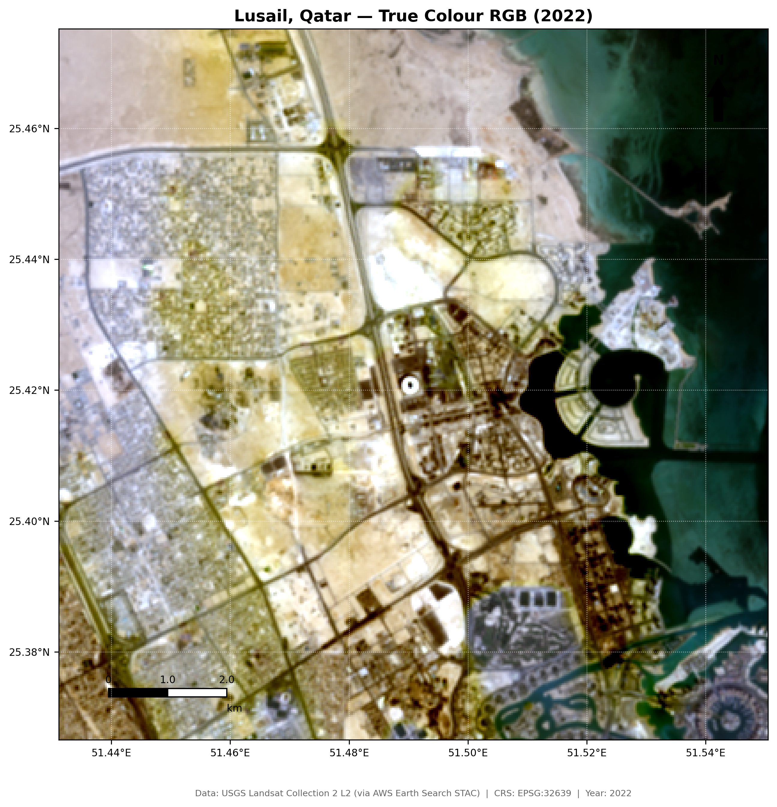
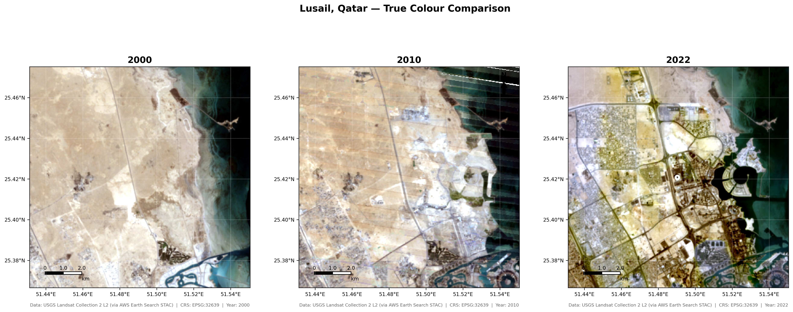
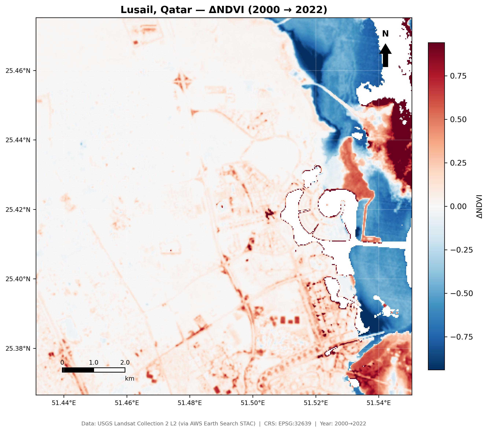
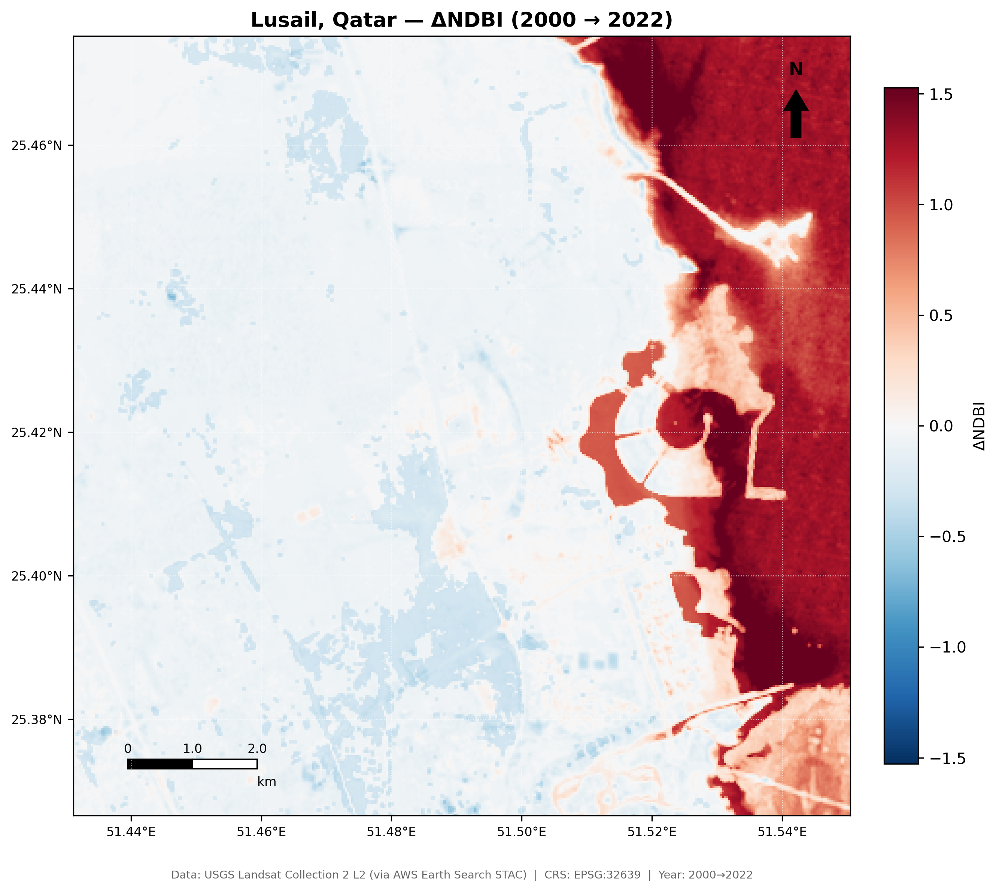
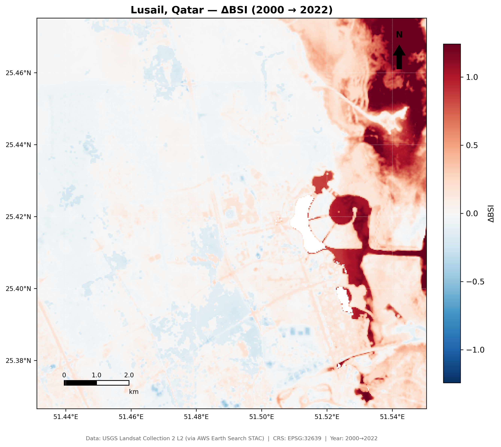
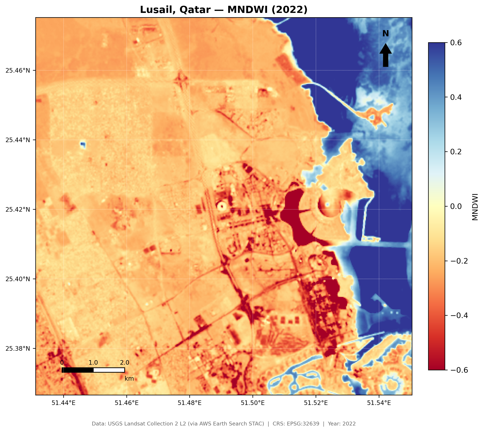
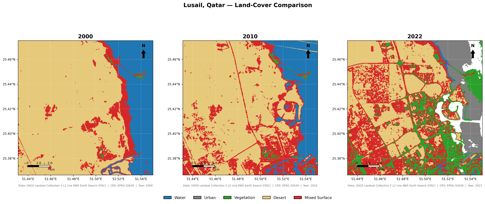

개발 전후 변화가 집중된 공간을 지도화한다.
도시·식생·사막·수역 면적 변화를 km² 단위로 산출한다.
메가 이벤트의 도시환경 영향을 원격탐사로 검증한다.
| 연도 | 자료 | 의미 | 해상도 | 주요 밴드 |
|---|---|---|---|---|
| 2000 | Landsat 5 | 개발 전 기준 | 30 m | Blue-Green-Red-NIR-SWIR |
| 2010 | Landsat 7 | 개발 본격화 | 30 m | Blue-Green-Red-NIR-SWIR |
| 2022 | Landsat 8/9 | 월드컵 개최 | 30 m | Blue-Green-Red-NIR-SWIR |





| 2000 → 2022 | Water | Urban | Vegetation | Desert | Mixed |
|---|---|---|---|---|---|
| Water | 0.7 | 16.0 | 5.6 | 0.5 | 1.6 |
| Vegetation | 0.0 | 0.0 | 0.4 | 0.0 | 0.0 |
| Desert | 0.0 | 0.0 | 13.3 | 49.9 | 37.0 |
| Mixed | 0.6 | 0.4 | 4.8 | 1.4 | 4.8 |
NDBI와 분류 결과에서 도시·인공구조물 증가가 확인되었다.
사막 면적은 2000년 대비 약 49.5 km² 감소했다.
개발과 함께 조경·녹지 신호가 크게 증가했다.